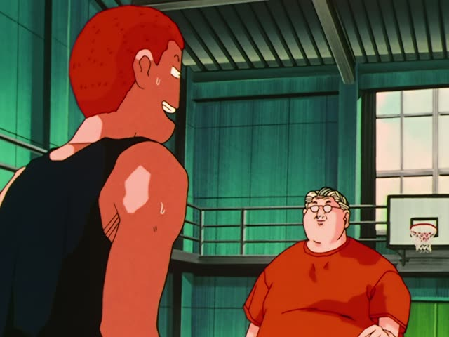
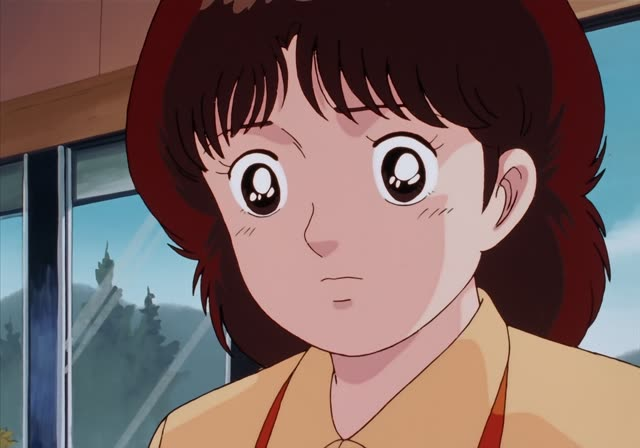
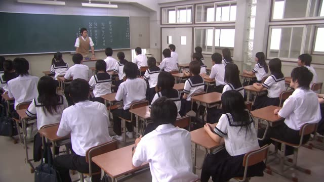
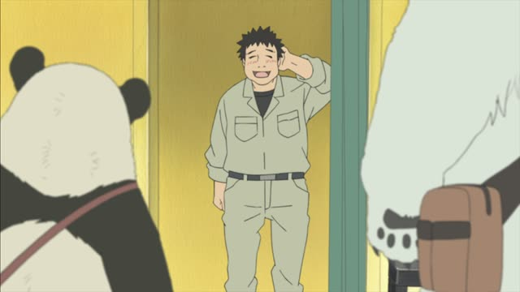
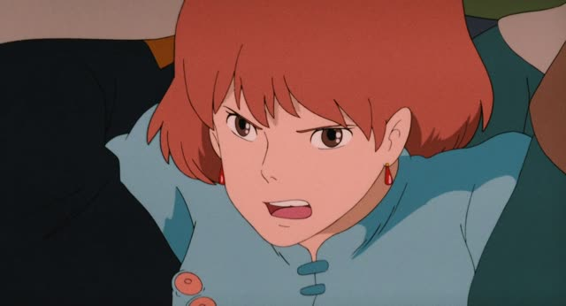

～と同じ
Death Note · Episode 24
いえ…僕も皆と同じ立場で捜査したいです。
"No... I want to work the case on the same footing as everyone."
Aと同じ means "the same as A". と marks what you compare to. Before a noun, 同じ goes straight on, with no な or の: 皆と同じ立場, "the same position as everyone".
On this card, Matsuda is offered a way to stay out of the plan, and says no: he wants the same position as everyone else. したいです makes it polite.
At the end of a sentence, add です or だ: これと同じです, "it's the same as this".
Teasing Master Takagi-san · Season 2, Episode 3
私と同じクラスになりたい？
"Do you want to be in the same class as me?"
On this card, Takagi teases Nishikata about the new school year. 同じ goes right before the noun クラス.
Quick Examples
Your friend shows you her new phone.
あ、私のと同じだ！
"Oh, it's the same as mine!"
私の = mine. At the end: と同じだ.
CasualAt a restaurant, ordering.
あの人と同じものをお願いします。
"I'll have the same as that person, please."
Before a noun: 同じもの, no な.
PoliteTalking about birthdays.
田中さんの誕生日は私と同じです。
"Tanaka-san's birthday is the same as mine."
PoliteComparing prices in two shops.
この店も、あの店と同じ値段だね。
"This shop has the same price as that one."
CasualWith and without
同じクラスです。
"We're in the same class." Same as who? Only clear from context.
山田さんと同じクラスです。
"I'm in the same class as Yamada-san." と shows who.
Examples from Media

Slam Dunk · Episode 93
基本的にはこれと同じです。
"It's basically the same as this."
Showing Sakuragi a move at practice.

Oishinbo · Episode 50
今のと同じじゃないんですか？
"Isn't it the same as the last one?"
今の = the one just now. The second dish looks just like the first.

1 Litre of Tears · Episode 5
１学期と同じでいいんじゃないですか？
"Why not keep it the same as first term?"
Choosing class reps: just keep the same ones.

Shirokuma Cafe · Episode 7
これじゃ、いつもと同じだよ。
"This is the same as always."
Picking an outfit: いつもと同じ = same as usual.
Dungeon Meshi · Episode 2
何？この匂い、夢の中と同じ。
"What? This smell, it's the same as in my dream."
Vinland Saga · Episode 4
俺と同じにおいだ。
"You smell the same as me."
Before a noun: 同じにおい, no な.
Tales from Earthsea
クモ、お前は僕と同じだ。
"Cob, you're the same as me."
At the end: と同じだ.

Nausicaä of the Valley of the Wind
ウソだ！あなた達はトルメキアと同じよ！
"Liar! You're the same as Tolmekia!"